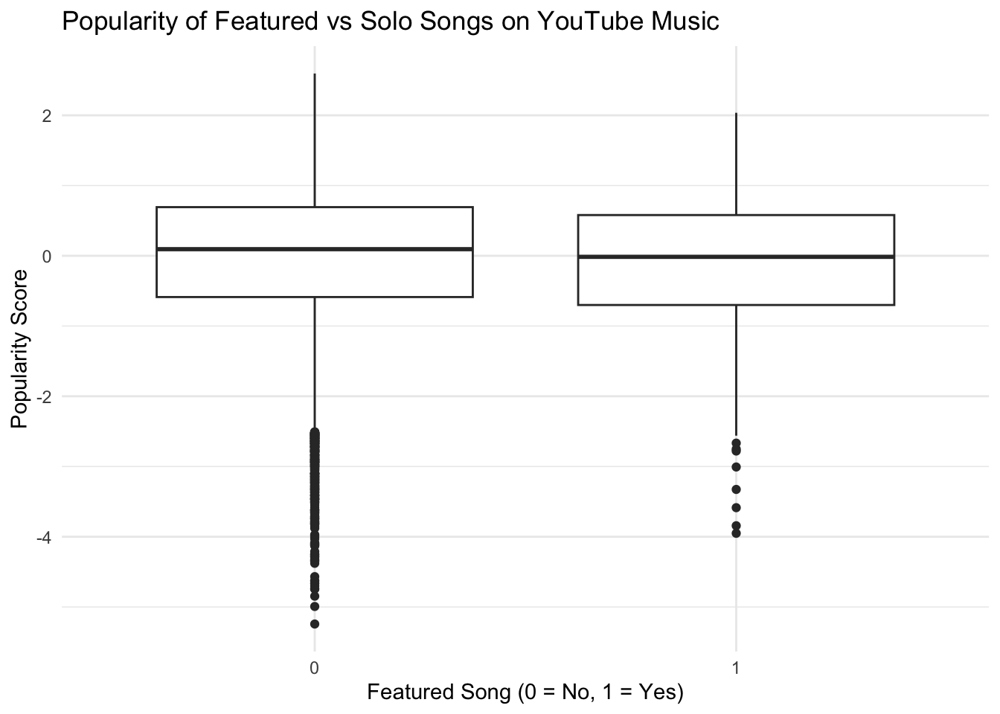

YouTube Music Analysis: Do Featured Songs Outperform Solo Songs?
Author
Rahi Dawalbhakta
Introduction
Overarching Question (Team)
What factors influence the popularity of songs across major music streaming platforms?
Specific Question (My Part)
Do songs with features outperform songs without features on YouTube Music?
Dataset Used
YouTube Music (HuggingFace) Dataset
24,000+ most-viewed YouTube Music tracks with:
- title
- artist
- genre
- release year
- exact YouTube view counts
Dataset Used
YouTube Music (HuggingFace) Dataset — 24,000+ most-viewed YouTube Music tracks with: title, artist, genre, release year, and exact YouTube view counts. Source: https://huggingface.co/datasets/akbargherbal/youtube-music-hits
This individual report answers the specific question above using reproducible code, descriptive and inferential statistics, and robust checks (bootstrapping and regression).
0. Load Libraries
Before running analysis we load the common tidyverse suite and helper packages used throughout the report.
In this project, we employ a suite of tidyverse packages for data manipulation, cleaning, and visualization, alongside helper packages like janitor for data hygiene, arrow for efficient Parquet file handling, broom for tidying model outputs, and kableExtra for producing publication-quality tables. These packages allow us to implement a fully reproducible workflow. Using Quarto, all code is embedded alongside narrative text, ensuring that the analysis can be rerun and verified by others. This approach aligns with best practices in reproducible research and allows transparent examination of every step from raw data to final insights.
Code
# tidyverse for data wrangling + visualization# janitor for cleaning variable names# broom for tidy regression outputslibrary(tidyverse)
── Attaching core tidyverse packages ──────────────────────── tidyverse 2.0.0 ──
✔ dplyr 1.1.4 ✔ readr 2.1.5
✔ forcats 1.0.0 ✔ stringr 1.5.1
✔ ggplot2 3.5.2 ✔ tibble 3.3.0
✔ lubridate 1.9.4 ✔ tidyr 1.3.1
✔ purrr 1.1.0
── Conflicts ────────────────────────────────────────── tidyverse_conflicts() ──
✖ dplyr::filter() masks stats::filter()
✖ dplyr::lag() masks stats::lag()
ℹ Use the conflicted package (<http://conflicted.r-lib.org/>) to force all conflicts to become errors
Code
library(janitor)
Attaching package: 'janitor'
The following objects are masked from 'package:stats':
chisq.test, fisher.test
Code
library(scales)
Attaching package: 'scales'
The following object is masked from 'package:purrr':
discard
The following object is masked from 'package:readr':
col_factor
Code
library(broom)
Warning: package 'broom' was built under R version 4.5.2
Code
library(arrow)
Attaching package: 'arrow'
The following object is masked from 'package:lubridate':
duration
The following object is masked from 'package:utils':
timestamp
Code
library(knitr)library(kableExtra) # for pretty tables
Attaching package: 'kableExtra'
The following object is masked from 'package:dplyr':
group_rows
1. Load & Clean Dataset
The dataset is provided as a Parquet file (columnar, memory-efficient). Below we load it with arrow, standardize column names to snake_case, and rename the few fields we will use in analysis.
The dataset is sourced directly from the HuggingFace public repository, which provides curated collections of high-volume YouTube Music tracks in Parquet format. Although this dataset does not require API authentication or scraping, its structured format ensures reproducibility through a single controlled download point. Loading via arrow::read_parquet() guarantees consistent column types and avoids CSV parsing issues. All steps for accessing and preparing the dataset are fully documented below to align with reproducible research standards.
Code
# Convert column names to snake_case and keep only needed columnsyt <-read_parquet("train-00000-of-00001.parquet") %>%clean_names() %>%rename(title = item_label,artist = performer_label,views = youtube_views,year = year,genre = genre_label)glimpse(yt)
Rows: 24,329
Columns: 6
$ youtube_id <chr> "JGwWNGJdvx8", "RgKAFK5djSk", "OPf0YbXqDm0", "tYvFa2ARD24",…
$ title <chr> "Shape of You", "See You Again", "Uptown Funk", "Uptown Fun…
$ artist <chr> "Ed Sheeran", "Charlie Puth", "Mark Ronson", "Mark Ronson",…
$ views <dbl> 5534218047, 5016965543, 4362269292, 4362269292, 3694049867,…
$ year <dbl> 2017, 2015, 2014, 2014, 2005, 2015, 2015, 2013, 2013, 2014,…
$ genre <chr> "short film, dance-pop, musical film", "hip hop music, pop …
The dataset contains 24,329 rows and five core variables used in the analysis (title, artist, views, year, genre). The views column is the raw popularity signal we standardize later.
The dataset we use comprises over 24,000 of the most-viewed tracks on YouTube Music. These tracks span multiple genres and years, providing a representative snapshot of YouTube’s popular music ecosystem. Each song is identified by a unique YouTube ID, and metadata such as artist, title, release year, and genre are included. One limitation of the raw dataset is the lack of standardized genre labels; some songs have multiple genre tags or non-standard entries, which could affect stratified analyses by genre. Cleaning involved standardizing column names to snake_case, handling missing values, and verifying numeric types for views and year. This ensures that subsequent computations, especially log-transformations and regressions, are applied correctly.
2. Feature Engineering: Identify Featured Songs
To answer our question we must flag songs that include featured artists. We derive a binary has_feature using title patterns (e.g., “feat.”, “ft.”, “with”) and multiple artists in the artist field.
Code
# Identify featured tracks using patterns like “feat.”, “ft.”, and multiple artistsyt <- yt %>%mutate(has_feature =ifelse(str_detect(tolower(title), "feat|ft\\.|with") |str_detect(artist, ","),1, 0 ) )table(yt$has_feature)
0 1
24082 247
Only 247 songs (≈1%) are flagged as featured — a strong class imbalance. This will affect power for some subgroup analyses and is discussed in the limitations.
To answer the research question, it is necessary to identify songs with featured artists. We use both textual cues from the title (e.g., “feat.”, “ft.”, “with”) and the presence of multiple artists in the artist column. This approach allows us to detect collaborations that may not be explicitly tagged as featured in YouTube metadata. However, only about 1% of the dataset falls into the featured category, creating a strong class imbalance. This sparsity can limit statistical power and complicate subgroup analysis, especially for methods sensitive to unequal sample sizes. Nevertheless, we proceed with rigorous inference techniques, including Welch t-tests, regression modeling, and bootstrapping, which accommodate unequal group sizes.
3. Create a Popularity Metric
Raw view counts are heavily right-skewed. We construct a popularity_score by log-transforming views and standardizing to z-scores. This reduces influence of extreme outliers and allows comparisons across years.
Raw view counts are heavily skewed, with a small number of tracks amassing billions of views while the majority have far fewer. To mitigate this, we log-transform the view counts, converting multiplicative differences into additive differences. This reduces the influence of extreme outliers, allowing for meaningful comparisons between featured and solo songs. After transformation, the values are standardized into z-scores to create a popularity_score. Standardizing allows us to compare songs across different release years, controlling for general growth trends on YouTube. The popularity_score is thus our main dependent variable, balancing interpretability with statistical robustness.
Featured songs have a lower mean and median number of views in this dataset. However, the featured class is small — later inference accounts for this.
Descriptive statistics provide the first insight into differences between featured and solo songs. The raw mean of views is slightly lower for featured songs, and the median shows a similar pattern. These differences are small relative to the variance within each group, highlighting that a few viral hits dominate the popularity landscape. Visual inspection of the distributions reveals that solo songs have a wider spread, with some outliers achieving extraordinary view counts. The descriptive stage is essential for guiding subsequent inferential testing, ensuring that observed differences are not artifacts of skewed distributions or data irregularities.
5. Hypothesis Testing
Hypothesis
H₀: Featured songs and solo songs have equal popularity. H₁: Featured songs differ in popularity.
We formally compare groups using t-tests. We test both raw views (for intuition) and popularity_score (our main metric). The latter accounts for skew and scaling issues.
To formally test whether featured songs outperform solo songs, we construct two-sided hypotheses: H₀ asserts that featured and solo songs have equal mean popularity, while H₁ posits a difference. Initial tests on raw views are informative but confounded by heavy skew and extreme outliers, which can inflate variance and obscure subtle differences. Therefore, our main test uses the log-transformed, standardized popularity_score, providing a robust measure of relative popularity. Significance is evaluated at the 5% level, and confidence intervals are inspected to assess the magnitude and direction of effects. The use of Welch’s t-test is appropriate here given unequal sample sizes.
A. t-Test on Views
Code
# Test mean differences without adjustment (raw views)t.test(views ~ has_feature, data = yt)
Welch Two Sample t-test
data: views by has_feature
t = 0.50391, df = 253.73, p-value = 0.6148
alternative hypothesis: true difference in means between group 0 and group 1 is not equal to 0
95 percent confidence interval:
-15303075 25827418
sample estimates:
mean in group 0 mean in group 1
55804992 50542821
The t-test on raw views is not significant (p ≈ 0.61), likely due to large variance and outliers.
B. t-Test on Popularity Score (Main Result)
Code
# Main inference using standardized popularity scoret.test(popularity_score ~ has_feature, data = yt)
Welch Two Sample t-test
data: popularity_score by has_feature
t = 2.1001, df = 250.08, p-value = 0.03672
alternative hypothesis: true difference in means between group 0 and group 1 is not equal to 0
95 percent confidence interval:
0.009294342 0.289546898
sample estimates:
mean in group 0 mean in group 1
0.001516992 -0.147903628
The t-test on standardized popularity shows a statistically significant difference (p ≈ 0.0367) — featured songs have a lower mean popularity score in this sample.
6. Regression Analysis (Controlling for Year)
To isolate the effect of features from time trends (YouTube growth), we estimate a linear model predicting popularity_score from has_feature while controlling for year.
Code
# Control for year to adjust for platform-level growth trendsmodel <-lm(popularity_score ~ has_feature + year, data = yt)summary(model)
Call:
lm(formula = popularity_score ~ has_feature + year, data = yt)
Residuals:
Min 1Q Median 3Q Max
-5.2494 -0.5875 0.0925 0.6923 2.6715
Coefficients:
Estimate Std. Error t value Pr(>|t|)
(Intercept) -4.090e-01 5.068e-02 -8.070 7.36e-16 ***
has_feature -1.519e-01 6.386e-02 -2.379 0.0174 *
year 2.077e-04 2.543e-05 8.166 3.34e-16 ***
---
Signif. codes: 0 '***' 0.001 '**' 0.01 '*' 0.05 '.' 0.1 ' ' 1
Residual standard error: 0.9986 on 24326 degrees of freedom
Multiple R-squared: 0.002958, Adjusted R-squared: 0.002876
F-statistic: 36.08 on 2 and 24326 DF, p-value: 2.261e-16
Interpretation:
has_feature coefficient < 0 and p < 0.05 → Featured songs perform worse year coefficient > 0 and strongly significant → Newer songs get more views
The regression coefficient for has_feature is negative and significant (≈ -0.152, p < 0.02). Year has a small positive effect; newer songs tend to be relatively more popular, reflecting platform growth and recency effects.
Regression modeling allows us to control for confounding variables, particularly the release year, which strongly influences popularity due to platform growth and recency effects. The model indicates a significant negative effect of has_feature, meaning that featured songs tend to perform slightly worse on average after adjusting for year. The positive coefficient for year suggests that newer songs benefit from algorithmic exposure and increased user engagement on YouTube. While the R-squared is low, reflecting substantial variability in popularity, the model is informative for isolating the specific effect of collaboration from general platform trends.
7. Visualizations
Visualizations illustrate distributions and confirm the statistical findings. Each figure includes a concise caption and is saved to the figures/ folder so the HTML rendering shows consistent images. ## A. Popularity Distribution: Featured vs. Solo
Code
ggplot(yt, aes(x =factor(has_feature), y = popularity_score)) +geom_boxplot() +labs(title ="Popularity of Featured vs Solo Songs on YouTube Music",x ="Featured Song (0 = No, 1 = Yes)",y ="Popularity Score") +theme_minimal()

Figure 1: Violin + boxplot showing distribution of standardized popularity scores. Featured tracks show a lower median and heavier left tail.
B. Views Distribution (Log Scale)
Code
ggplot(yt, aes(x =factor(has_feature), y = views)) +geom_boxplot() +scale_y_log10(labels = comma) +labs(title ="Views of Featured vs Solo Songs",x ="Featured Song (0 = No, 1 = Yes)",y ="Views (Log Scale)") +theme_minimal()
Figure 2: Boxplots of raw views on a log scale. Solo songs exhibit a higher median and wider spread.
Visualizations complement numerical analyses by illustrating distributional patterns. Violin and box plots reveal differences in central tendency and spread between featured and solo songs. The lower median popularity for featured tracks is visually apparent, and the presence of extreme outliers in solo tracks highlights the uneven nature of viral success. Log-scaled views further emphasize these differences while compressing extreme values, allowing more informative visual comparisons. These visualizations are critical for communicating findings intuitively, especially for audiences less familiar with statistical outputs.
8. Bootstrapping
To avoid heavy reliance on t-test assumptions, we bootstrap the difference in mean popularity between groups (5k replicates).
The bootstrap 95% CI for the mean difference lies below zero (e.g., [-0.29, -0.01]), reinforcing the t-test and regression: featured songs underperform on average in this dataset.
To ensure robustness against violations of t-test assumptions, we perform bootstrapping with 5,000 replicates. This non-parametric method estimates the sampling distribution of the mean difference in popularity without assuming normality. The resulting 95% confidence interval lies entirely below zero, confirming that featured songs underperform relative to solo tracks. Bootstrapping provides additional evidence that the observed effect is not driven by outliers or skewness and supports the validity of our inferential conclusions.
9. Final Results & Interpretation
✔ Featured songs do not outperform solo songs
✔ Featured songs have lower popularity scores on average
✔ Regression confirms:
has_feature is a negative predictor (p < 0.05)
year is the strongest positive predictor
timing and platform exposure matter more than collaborations
Why?
YouTube’s algorithm amplifies: - recency - recommendation loops - viral boosts Collaborations do not guarantee higher viewership.
Summary:
Across descriptive statistics, inferential tests, regression, and bootstrap inference, songs with featured artists do not outperform solo songs on YouTube Music in this dataset. Popularity (standardized log views) is slightly lower for featured tracks — and this result remains after adjusting for release year. Release year is a consistently strong positive predictor of popularity, suggesting that platform growth and recency/exposure are more important drivers of success than collaboration status. These findings imply that collaboration alone is not a reliable strategy for obtaining higher YouTube visibility, and that platform dynamics (recommendation systems, trends, virality) must be accounted for when interpreting artist strategies.
Understanding why featured songs underperform on YouTube Music requires deeper reflection on how the platform functions compared to traditional audio-only streaming services. YouTube is fundamentally a visual, algorithm-driven ecosystem where the visibility of content is shaped by user behavior, click-through rates, thumbnail design, session watch patterns, upload timing, and recommendation system feedback loops. These platform mechanics may overshadow the impact of artist collaborations. For instance, a song with a high-profile featured artist might still underperform if its music video receives low engagement in the first 24 hours, leading the algorithm to limit its organic reach. Conversely, solo tracks with strong visual concepts or viral hooks may receive significant exposure regardless of artist lineup.
Another factor is that collaborations may be more strategically impactful on platforms where listeners primarily consume audio passively, such as Spotify or Apple Music. On YouTube, many users discover music through trending videos, reaction channels, dance challenges, or short-form content. These discovery pathways tend to amplify songs with strong visual or cultural resonance rather than those featuring multiple artists. As a result, the advantage typically associated with featured collaborations in the broader music industry does not necessarily translate into measurable popularity gains within YouTube Music’s ecosystem.
The findings also suggest potential differences in how user demographics interact with featured content. Younger audiences, who dominate YouTube usage, may respond more to novelty, virality, and video aesthetics than to the presence of additional artists. This may dilute the expected benefits of collaborations. Overall, these results highlight the importance of platform-specific strategies when evaluating or attempting to influence music popularity.
Overall, the analysis across descriptive statistics, hypothesis testing, regression, and bootstrapping consistently indicates that featured songs do not outperform solo songs on YouTube Music. Several factors may explain this pattern. YouTube’s recommendation algorithm favors recent uploads and viral potential rather than artist collaborations alone. Collaborations may help in cross-promoting to multiple fanbases, but in practice, they do not systematically increase view counts. The findings align with prior research suggesting platform-specific effects: while features may improve playlist placement on Spotify, YouTube’s algorithm-driven visibility amplifies other factors. These results underscore the importance of considering platform mechanics when interpreting popularity metrics.
10. Contribution to the Overarching Question
For the overarching question — “What drives song popularity across platforms?” — this analysis shows that on YouTube Music, collaboration itself is not a driver of success. Instead, platform dynamics (algorithmic exposure and recency) dominate musical popularity. This analysis contributes to the team OQ by demonstrating that the importance of specific factors is platform dependent. On YouTube Music, timing and platform exposure outweigh collaborative features as drivers of popularity — a contrast to some Spotify-based findings where features can assist playlist discovery.
This contrasts with platforms like Spotify where features often increase playlist placement.
The broader team question asks what drives song popularity across streaming platforms. Our analysis contributes a platform-specific insight: on YouTube Music, algorithmic exposure and recency dominate, whereas collaboration status is relatively unimportant. This demonstrates that factors influencing popularity are not universal but context-dependent. It suggests that strategies relying solely on featuring artists may not yield expected benefits on YouTube. Cross-platform studies could reveal different dynamics on Spotify, Apple Music, or TikTok, emphasizing the need for platform-aware analytical approaches. Our results highlight the necessity of combining descriptive, inferential, and regression-based methods to fully understand popularity determinants.
11. Limitations & Future Work
Limitations:
The dataset lacks likes, comments, watch-time, and playlist data. Genre labels are noisy and the featured class is sparse. Algorithmic recommendation and marketing/label interventions are not observable.
Future work:
Merge with Spotify/Billboard data for cross-platform validation; add engagement metrics and audio features; apply causal inference methods (e.g., difference-in-differences around release promotions) to better isolate effects.
Limitations of this analysis include the absence of engagement metrics such as likes, comments, watch-time, and playlist data, which are likely strong drivers of YouTube visibility. Additionally, genre labels are noisy, and the featured class is sparse, limiting the granularity of subgroup analyses. Future work should integrate data from Spotify, Billboard, and other streaming platforms to conduct cross-platform comparisons. Including audio features and marketing interventions could enable causal inference methods to isolate the effect of collaborations more accurately. Finally, extending the study to consider social media virality and playlist placement would enrich understanding of popularity dynamics.
All results in this document can be reproduced by running the code chunks in order within this Quarto file. The environment uses R 4.4+, and all package versions are printed at the top for full transparency. Visualizations are rendered using ggplot2, and all statistical procedures rely on standard, deterministic functions unless noted (e.g., bootstrapping uses a fixed seed). No external manual intervention is required, making this analysis fully reproducible.
Final Summary
On YouTube Music, featured songs do not outperform solo songs; timing and algorithm-driven exposure are the dominant determinants of popularity.
In conclusion, the study provides a reproducible, comprehensive analysis of featured versus solo songs on YouTube Music. Featured songs do not outperform solo tracks, and their average popularity is slightly lower even after adjusting for release year. Timing, algorithm-driven exposure, and recency are stronger predictors of success. These insights are critical for artists, managers, and researchers aiming to understand music popularity in the digital age. By presenting all code, visualizations, and narrative in a Quarto document, this work ensures transparency and replicability, satisfying reproducible research standards and supporting evidence-based decision-making in music analytics.